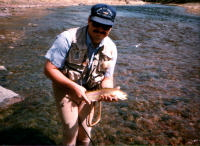
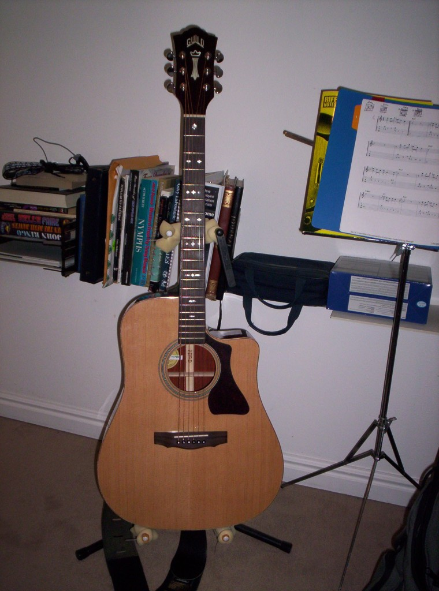

I live in northern Utah Just south of the megalopolis of Mendon, Utah with my wife, Tracie and 3 kids. my oldest, Mat, is (hopefully) moving out soon to attend usu and become a little more socially active (when are we going to see grandkids???). my second son, Zac, is fighting brain cancer and hopefully on his way to being cured. Last of the mohicans is Ana. both Zachary and ana are adopted. We got Zac through lds social services in sandy, ut in 1995 and went to Ukraine in november and december of 2001 to get ana in kerch, crimea.
I do software and currently do websites for the Church of Jesus Christ of Latter-day Saints. I've been doing software for over thirty years (since 1981). My first programming course was FORTRAN, using punch cards on a Burroughs 6800 mainframe. Looking back it seems like just yesterday. I've been a fishing enthusiast my whole life. My grandmother (Mom's side) taught me to fish in South Dakota when I was about 7-8 years old and I've been doing it ever since.  I moved to Utah in 1976 from California to go to Utah State University and decided to leave all fishing equipment at home and learn to fly fish. I still remember the Kurt Gowdy outdoors show with Bing Crosby puffing on his pipe, singing and fly fishing. It really got me excited and motivated me to learn myself. I've been doing it now for 42 years and love every minute.
I took up the guitar about 14 years ago and although I'm not terribly good at it, I get a lot of pleasure playing and singing; even if it is just to myself.  Here is one of my guitars, my favorite. It is a Guild GAD-50PCE. It has a beautiful rich tone, outstanding action and is a beautiful guitar to boot. I lucked onto it on eBay and it's my 3rd Guild. Each has been high quality and lived up to the company motto, "Made to be Played".
I also play a lot of chess. I mostly play on-line at GameKnot.com. My handle there is "flyfisher" go figure. I am considered to be an intermediate player. I just don't have the interest to devote a lot of study to it. I do it for fun.